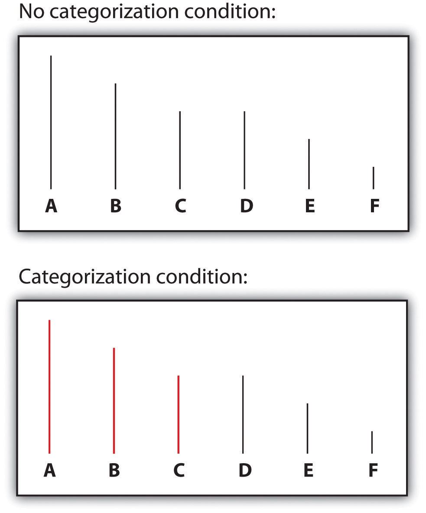
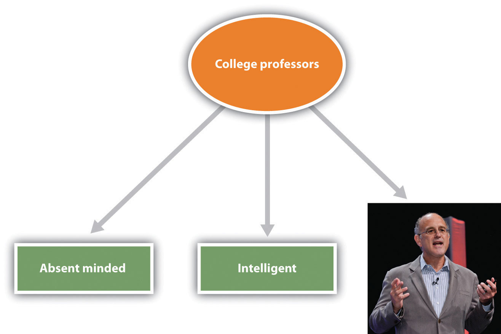

Thinking about others in terms of their group memberships is known as social categorizationThe natural cognitive process of placing individuals into social groups according to their social categories (e.g., men versus women, old people versus young people).—the natural cognitive process by which we place individuals into social groups. Social categorization occurs when we think of someone as a man (versus a woman), an old person (versus a young person), a Black person (versus an Asian or White person), and so on (Allport, 1954/1979).Allport, G. W. (1954/1979). The nature of prejudice. New York, NY: Doubleday. Just as we categorize objects into different types, so we categorize people according to their social group memberships. Once we do so, we begin to respond to those people more as members of a social group than as individuals.
Imagine for a moment that two college students, John and Sarah, are talking at a table in the student union at your college or university. At this point, we would probably not consider them to be acting as group members, but rather as two individuals. John is expressing his opinions, and Sarah is expressing hers. Imagine, however, that as the conversation continues, Sarah brings up an assignment that she is completing for her women’s studies class. It turns out that John does not think there should be a women’s studies program at the college, and he tells Sarah so. He argues that if there is a women’s studies program, then there should be a men’s studies program too. Furthermore, he argues that women are getting too many breaks in job hiring and that qualified men are the targets of discrimination. Sarah feels quite the contrary—arguing that women have been the targets of sexism for many, many years and even now do not have the same access to high-paying jobs that men do.
You can see that an interaction that began at individual level, as two individuals conversing, has now turned to the group level, in which John has begun to consider himself as a man, and Sarah has begun to consider herself as a woman. In short, Sarah is now arguing her points not so much for herself as she is as a representative of one of her ingroups—namely, women—and John is acting as a representative of one of his ingroups—namely, men. Sarah feels that her positions are correct, and she believes they are true not only for her but for women in general. And the same is true of John. You can see that these social categorizations may create some potential for misperception, and perhaps even hostility. And John and Sarah may even change their opinions about each other, forgetting that they really like each other as individuals, because they are now responding more as group members with opposing views.
Imagine now that while John and Sarah are still talking, some students from another college, each wearing the hats and jackets of that school, show up in the student union. The presence of these outsiders might change the direction of social categorization entirely, leading both John and Sarah to think of themselves as students at their own college. And this social categorization might lead them to become more aware of the positive characteristics of their college (the excellent basketball team, lovely campus, and intelligent students) in comparison with the characteristics of the other school. Now, rather than perceiving themselves as members of two different groups (men versus women), John and Sarah might suddenly perceive themselves as members of the same social category (students at their college).
Perhaps this example will help you see the flexibility of social categorization. We sometimes think of our relationships with others at the individual level and sometimes at the group level. And which groups we use in social categorization can change over time and in different situations. I think you would agree that you are more likely to categorize yourself as a member of your college or university when your basketball or football team has just won a really important game, or at your commencement day ceremony, than you would on a normal evening out with your family. In these cases, your membership as a university student is simply more salient and important than it is every day, and you are more likely to categorize yourself accordingly.
Social categorization occurs spontaneously, without much thought on our part (Crisp & Hewstone, 2007).Crisp, R. J., & Hewstone, M. (Eds.). (2007). Multiple social categorization. San Diego, CA: Elsevier Academic Press. Shelley Taylor and her colleagues (Taylor, Fiske, Etcoff, & Ruderman, 1978)Taylor, S. E., Fiske, S. T., Etcoff, N. L., & Ruderman, A. J. (1978). Categorical and contextual bases of person memory and stereotyping. Journal of Personality and Social Psychology, 36(7), 778–793. showed their research participants a slide and tape presentation of three male and three female college students who had supposedly participated in a discussion group. During the presentation, each member of the discussion group made a suggestion about how to advertise a college play. The statements were controlled so that across all the research participants, the statements made by the men and the women were of equal length and quality. Furthermore, one half of the participants were told that when the presentation was over, they would be asked to remember which person had made which suggestion, whereas the other half of the participants were told merely to observe the interaction without attending to anything in particular.
After they had viewed all the statements made by the individuals in the discussion group, the research participants were given a memory test (this was entirely unexpected for the participants who had not been given memory instructions). The participants were shown the list of all the statements that had been made, along with the pictures of each of the discussion group members, and were asked to indicate who had made each of the statements. The research participants were not very good at this task, and yet when they made mistakes, these errors were very systematic.
As you can see in Table 12.1 "Name Confusions", the mistakes were such that the statements that had actually been made by a man were more frequently wrongly attributed to another man in the group than to another woman, and the statements actually made by a woman were more frequently attributed to other women in the group than to a man. The participants evidently categorized the speakers by their gender, leading them to make more within-gender than across-gender confusions.
Interestingly, and suggesting that categorization is occurring all the time, the instructions that the participants had been given made absolutely no difference. There was just as much categorization for those who were not given any instructions as for those who were told to remember who said what. Other research using this technique has found that we spontaneously categorize each other on the basis of many other group memberships, including race, academic status (student versus teacher), social roles, and other social categories (Fiske, Haslam, & Fiske, 1991; Stangor, Lynch, Duan, & Glass, 1992).Fiske, A. P., Haslam, N., & Fiske, S. T. (1991). Confusing one person with another: What errors reveal about the elementary forms of social relations. Journal of Personality and Social Psychology, 60(5), 656–674; Stangor, C., Lynch, L., Duan, C., & Glass, B. (1992). Categorization of individuals on the basis of multiple social features. Journal of Personality and Social Psychology, 62(2), 207–218.
Table 12.1 Name Confusions
| Instructions | Within race errors | Between race errors |
|---|---|---|
| Memory | 5.78 | 4.29 |
| No memory | 6.57 | 4.36 |
| Taylor, Fiske, Etcoff, and Ruderman (1978)Taylor, S. E., Fiske, S. T., Etcoff, N. L., & Ruderman, A. J. (1978). Categorical and contextual bases of person memory and stereotyping. Journal of Personality and Social Psychology, 36(7), 778–793. demonstrated that people categorized others spontaneously. Even without any instructions to categorize, people nevertheless confused others by their sex. | ||
The conclusion is simple, if perhaps obvious: Social categorization is occurring all around us all the time. Indeed, social categorization occurs so quickly that people may have difficulty not thinking about others in terms of their group memberships (see Figure 12.3).
The tendency to categorize others is normally quite useful. In some cases, we categorize because doing so provides us with information about the characteristics of people who belong to certain social groups (Lee, Jussim, & McCauley, 1995).Lee, Y. T., Jussim, L. J., & McCauley, C. R. (1995). Stereotype accuracy: Toward appreciating group differences. Washington, DC: American Psychological Association. If you found yourself lost in a city, you might look for a police officer or a taxi driver to help you find your way. In this case, social categorization would probably be useful because a police officer or a taxi driver might be particularly likely to know the layout of the city streets. Of course, using social categories will only be informative to the extent that the stereotypes held by the individual about that category are accurate. If police officers were actually not that knowledgeable about the city layout, then using this categorization would not be informative.
It has been argued that there is a kernel of truth in most stereotypes, and this seems to be the case. There is a correlation between how group members perceive the stereotypes of their own groups and how people from other groups perceive those same stereotypes (Judd & Park, 1993; Swim, 1994).Judd, C. M., & Park, B. (1993). Definition and assessment of accuracy in social stereotypes. Psychological Review, 100(1), 109–128; Swim, J. K. (1994). Perceived versus meta-analytic effect sizes: An assessment of the accuracy of gender stereotypes. Journal of Personality and Social Psychology, 66(1), 21–36. This truth may come in part from the roles that individuals play in society. For instance, the stereotypes (which are held by many people) that women are “nurturing” and that men are “dominant” may occur in part because, on average, men and women find themselves in different social roles within a culture (Eagly & Steffen, 1984).Eagly, A. H., & Steffen, V. J. (1984). Gender stereotypes stem from the distribution of women and men into social roles. Journal of Personality and Social Psychology, 46(4), 735–754. In most cultures, men are more likely to be in higher-status occupations, such as doctors and lawyers, whereas women are more likely to play the role of homemakers and child-care workers. In this sense, the stereotypes are at least partly true for many of the members of the social category, in terms of their actual behaviors. Because men are more likely to be leaders than are women, they may well be, on average, more dominant; and because women are more likely to take care of children, they may, on average, act in a more nurturing way than do men.
On the other hand, we sometimes categorize others not because it seems to provide more information about them but because we may not have the time (or the motivation) to do anything more thorough. Using our stereotypes to size up another person might simply make our life easier (Macrae, Bodenhausen, Milne, & Jetten, 1994).Macrae, C. N., Bodenhausen, G. V., Milne, A. B., & Jetten, J. (1994). Out of mind but back in sight: Stereotypes on the rebound. Journal of Personality and Social Psychology, 67(5), 808–817. According to this approach, thinking about other people in terms of their social category memberships is a functional way of dealing with the world—things are complicated, and we reduce complexity by relying on our stereotypes.
Although thinking about others in terms of their social category memberships has some potential benefits for the person who does the categorizing, categorizing others, rather than treating them as unique individuals with their own unique characteristics, has a wide variety of negative, and often very unfair, outcomes for those who are categorized.
One problem is that social categorization distorts our perceptions such that we tend to exaggerate the differences between people from different social groups while at the same time perceiving members of groups (and particularly outgroups) as more similar to each other than they actually are. This overgeneralization makes it more likely that we will think about and treat all members of a group the same way. Tajfel and Wilkes (1963)Tajfel, H., & Wilkes, A. L. (1963). Classification and quantitative judgment. British Journal of Psychology, 54, 101–114. performed a simple experiment that provided a picture of the potential outcomes of categorization. As you can see in Figure 12.4 "Perceptual Accentuation", the experiment involved having research participants judge the length of six lines. In one of the experimental conditions, participants simply saw six lines, whereas in the other condition, the lines were systematically categorized into two groups—one comprising the three shorter lines and one comprising the three longer lines.
Figure 12.4 Perceptual Accentuation
Lines C and D were seen as the same length in the noncategorized condition, but line C was perceived as longer than line D when the lines were categorized into two groups. From Tajfel (1970).Tajfel, H. (1970). Experiments in intergroup discrimination. Scientific American, 223, 96–102.
Tajfel found that the lines were perceived differently when they were categorized, such that the differences between the groups and the similarities within the groups were emphasized. Specifically, he found that although lines C and D (which are actually the same length) were perceived as equal in length when the lines were not categorized, line D was perceived as being significantly longer than line C in the condition in which the lines were categorized. In this case, categorization into two groups—the “short lines group” and the “long lines group”—produced a perceptual bias such that the two groups of lines were seen as more different than they really were.
Similar effects occur when we categorize other people. We tend to see people who belong to the same social group as more similar than they actually are, and we tend to judge people from different social groups as more different than they actually are. The tendency to see members of social groups as similar to each other is particularly strong for members of outgroups, resulting in outgroup homogeneityThe tendency to view members of outgroups as more similar to each other than we see members of ingroups.—the tendency to view members of outgroups as more similar to each other than we see members of ingroups (Linville, Salovey, & Fischer, 1986; Ostrom & Sedikides, 1992; Meissner & Brigham, 2001).Linville, P. W., Salovey, P., & Fischer, G. W. (1986). Stereotyping and perceived distributions of social characteristics: An application to ingroup-outgroup perception. In J. F. Dovidio & S. L. Gaertner (Eds.), Prejudice, discrimination and racism (pp. 165–208). Orlando, FL: Academic Press; Ostrom, T. M., & Sedikides, C. (1992). Out-group homogeneity effects in natural and minimal groups. Psychological Bulletin, 112(3), 536–552; Meissner, C. A., & Brigham, J. C. (2001). Thirty years of investigating the own-race bias in memory for faces: A meta-analytic review. Psychology, Public Policy, and Law, 7, 3–35. I’m sure you’ve had this experience yourself, when you found yourself thinking or saying, “Oh, them, they’re all the same!”
Patricia Linville and Edward Jones (1980)Linville, P. W., & Jones, E. E. (1980). Polarized appraisals of out-group members. Journal of Personality and Social Psychology, 38, 689–703. gave research participants a list of trait terms and asked them to think about either members of their own group (e.g., Blacks) or members of another group (e.g., Whites) and to place the trait terms into piles that represented different types of people in the group. The results of these studies, as well as other studies like them, were clear: People perceive outgroups as more homogeneous than the ingroup. Just as White people used fewer piles of traits to describe Blacks than Whites, young people used fewer piles of traits to describe elderly people than they did young people, and students used fewer piles for members of other universities than they did for members of their own university.
Outgroup homogeneity occurs in part because we don’t have as much contact with outgroup members as we do with ingroup members, and the quality of interaction with outgroup members is often more superficial. This prevents us from really learning about the outgroup members as individuals, and as a result, we tend to be unaware of the differences among the group members. In addition to learning less about them because we see and interact with them less, we routinely categorize outgroup members, thus making them appear more cognitively similar (Haslam, Oakes, & Turner, 1996).Haslam, S. A., Oakes, P. J., & Turner, J. C. (1996). Social identity, self-categorization, and the perceived homogeneity of ingroups and outgroups: The interaction between social motivation and cognition. In Handbook of motivation and cognition: The interpersonal context (Vol. 3, pp. 182–222). New York, NY: The Guilford Press.
Once we begin to see the members of outgroups as more similar to each other than they actually are, it then becomes very easy to apply our stereotypes to the members of the groups without having to consider whether the characteristic is actually true of the particular individual. If men think that women are all alike, then they may also think that they all have the same characteristics—they’re all “emotional” and “weak.” And women may have similarly simplified beliefs about men (they’re “insensitive,” “unwilling to commit,” etc.). The outcome is that the stereotypes become linked to the group itself in a set of mental representations (Figure 12.5). The stereotypes are “pictures in our heads” of the social groups (Lippman, 1922).Lippman, W. (1922). Public opinion. New York, NY: Harcourt & Brace. These beliefs just seem right and natural, even though they are frequently distorted overgeneralizations (Hirschfeld, 1996; Yzerbyt, Schadron, Leyens, & Rocher, 1994).Hirschfeld, L. (1996). Race in the making: Cognition, culture and the child’s construction of human kinds. Cambridge, MA: MIT Press; Yzerbyt, V., Schadron, G., Leyens, J., & Rocher, S. (1994). Social judgeability: The impact of meta-informational cues on the use of stereotypes. Journal of Personality and Social Psychology, 66, 48–55.
Figure 12.5
Stereotypes are the beliefs associated with social categories. The figure shows links between the social category of college professors and its stereotypes as a type of neural network or schema. The representation also includes one image (or exemplar) of a particular college professor whom the student knows.
Image courtesy of Dan Gilbert.
Our stereotypes and prejudices are learned through many different processes. This multiplicity of causes is unfortunate because it makes stereotypes and prejudices even more likely to form and harder to change. For one, we learn our stereotypes in part through our communications with parents and peers (Aboud & Doyle, 1996)Aboud, F. E., & Doyle, A.-B. (1996). Parental and peer influences on children’s racial attitudes. International Journal of Intercultural Relations, 20, 371–383. and from the behaviors we see portrayed in the media (Brown, 1995).Brown, R. (1995). Prejudice: Its social psychology. Cambridge, MA: Blackwell. Even 5-year-old children have learned cultural norms about the appropriate activities and behaviors for boys and girls and also have developed stereotypes about age, race, and physical attractiveness (Bigler & Liben, 2006).Bigler, R. S., & Liben, L. S. (2006). A developmental intergroup theory of social stereotypes and prejudice. In R. V. Kail (Ed.), Advances in child development and behavior (Vol. 34, pp. 39–89). San Diego, CA: Elsevier. And there is often good agreement about the stereotypes of social categories among the individuals within a given culture. In one study assessing stereotypes, Stephanie Madon and her colleagues (Madon et al., 2001)Madon, S., Guyll, M., Aboufadel, K., Montiel, E., Smith, A., Palumbo, P., et al. (2001). Ethnic and national stereotypes: The Princeton trilogy revisited and revised. Personality and Social Psychology Bulletin, 27(8), 996–1010. doi: 10.1177/0146167201278007 presented U.S. college students with a list of 84 trait terms and asked them to indicate for which groups each trait seemed appropriate (Figure 12.6 "Current Stereotypes Held by College Students"). The participants tended to agree about what traits were true of which groups, and this was true even for groups of which the respondents were likely to never have met a single member (Arabs and Russians). Even today, there is good agreement about the stereotypes of members of many social groups, including men and women and a variety of ethnic groups.
Figure 12.6 Current Stereotypes Held by College Students

From Madon et al. (2001).Madon, S., Guyll, M., Aboufadel, K., Montiel, E., Smith, A., Palumbo, P., & Jussim, L. (2001). Ethnic and national stereotypes: The Princeton trilogy revisited and revised. Personality and Social Psychology Bulletin, 27(8), 996–1010. doi: 10.1177/0146167201278007
Once they become established, stereotypes (like any other cognitive representation) tend to persevere. We begin to respond to members of stereotyped categories as if we already knew what they were like. Yaacov Trope and Eric Thompson (1997)Trope, Y., & Thompson, E. (1997). Looking for truth in all the wrong places? Asymmetric search of individuating information about stereotyped group members. Journal of Personality and Social Psychology, 73(2), 229–241. found that individuals addressed fewer questions to members of categories about which they had strong stereotypes (as if they already knew what these people were like) and that the questions they did ask were likely to confirm the stereotypes they already had.
In other cases, stereotypes are maintained because information that confirms our stereotypes is better remembered than information that disconfirms them. When we see members of social groups perform behaviors, we tend to better remember information that confirms our stereotypes than we remember information that disconfirms our stereotypes (Fyock & Stangor, 1994).Fyock, J., & Stangor, C. (1994). The role of memory biases in stereotype maintenance. British Journal of Social Psychology, 33(3), 331–343. If we believe that women are bad drivers and we see a woman driving poorly, then we tend to remember it, but when we see a woman who drives particularly well, we tend to forget it. This is of course another example of the general principle of assimilation—we tend to perceive the world in ways that make it fit our existing beliefs more easily than we change our beliefs to fit the reality around us.
And stereotypes become difficult to change because they are so important to us—they become an integral and important part of our everyday lives in our culture. Stereotypes are frequently expressed on TV, in movies, and in chat rooms and blogs, and we learn a lot of our beliefs from these sources. Our friends also tend to hold beliefs similar to ours, and we talk about these beliefs when we get together with them (Schaller & Conway, 1999).Schaller, M., & Conway, G. (1999). Influence of impression-management goals on the emerging content of group stereotypes: Support for a social-evolutionary perspective. Personality and Social Psychology Bulletin, 25, 819–833. In short, stereotypes and prejudice are powerful largely because they are important social norms that are part of our culture (Guimond, 2000).Guimond, S. (2000). Group socialization and prejudice: The social transmission of intergroup attitudes and beliefs. European Journal of Social Psychology, 30(3), 335–354.
Because they are so highly cognitively accessible, and because they seem so “right,” our stereotypes easily influence our judgments of and responses to those we have categorized. The social psychologist John Bargh once described stereotypes as “cognitive monsters” because their activation was so powerful and because the activated beliefs had such insidious influences on social judgment (Bargh, 1999).Bargh, J. (Ed.). (1999). The cognitive monster: The case against the controllability of automatic stereotype effects. New York, NY: Guilford Press. Making things even more difficult, stereotypes are strongest for the people who are in most need of change—the people who are most prejudiced (Lepore & Brown, 1997).Lepore, L., & Brown, R. (1997). Category and stereotype activation: Is prejudice inevitable? Journal of Personality and Social Psychology, 72(2), 275–287.
Because stereotypes and prejudice often operate out of our awareness, and also because people are frequently unwilling to admit that they hold them, social psychologists have developed methods for assessing them indirectly. In the next section we will consider two of these approaches—the bogus pipeline procedureA procedure, designed to elicit more honest responses, in which an experimenter first convinces participants that he or he has access to their “true” beliefs. Once the participants are convinced that the researcher knows their “true attitudes,” they are assumed to be more honest in answering the rest of the questions they are asked. and the Implicit Association Test (IAT)A procedure designed to elicit more honest, implicit beliefs. Participants are asked to classify stimuli into one of two categories by pressing one button with their left hand and another button with their right hand. The categories are arranged such that the responses to be answered with the left and right buttons either match the stereotype or mismatch the stereotype.
Measuring Stereotypes Indirectly
One difficulty in measuring stereotypes and prejudice is that people may not tell the truth about their beliefs. Most people do not want to admit—either to themselves or to others—that they hold stereotypes or that they are prejudiced toward some social groups. To get around this problem, social psychologists make use of a number of techniques that help them measure these beliefs more subtly and indirectly.
One indirect approach to assessing prejudice is called the bogus pipeline procedure (Jones & Sigall, 1971).Jones, E. E., & Sigall, H. (1971). The bogus pipeline: A new paradigm for measuring affect and attitude. Psychological Bulletin, 76(5), 349–364. In this procedure, the experimenter first convinces the participants that he or he has access to their “true” beliefs, for instance, by getting access to a questionnaire that they completed at a prior experimental session. Once the participants are convinced that the researcher is able to assess their “true” attitudes, it is expected that they will be more honest in answering the rest of the questions they are asked because they want to be sure that the researcher does not catch them lying. The bogus pipeline procedure suggests that people may frequently mask their negative beliefs in public—people express more prejudice when they are in the bogus pipeline than they do when they are asked the same questions more directly.
Other indirect measures of prejudice are also frequently used in social psychological research, for instance—assessing nonverbal behaviors such as speech errors or physical closeness. One common measure involves asking participants to take a seat on a chair near a person from a different racial or ethnic group and measuring how far away the person sits (Sechrist & Stangor, 2001; Word, Zanna, & Cooper, 1974).Sechrist, G. B., & Stangor, C. (2001). Perceived consensus influences intergroup behavior and stereotype accessibility. Journal of Personality and Social Psychology, 80(4), 645–654; Word, C. O., Zanna, M. P., & Cooper, J. (1974). The nonverbal mediation of self-fulfilling prophecies in interracial interaction. Journal of Experimental Social Psychology, 10(2), 109–120. People who sit farther away are assumed to be more prejudiced toward the members of the group.
Because our stereotypes are activated spontaneously when we think about members of different social groups, it is possible to use reaction-time measures to assess this activation and thus to learn about people’s stereotypes and prejudices. In these procedures, participants are asked to make a series of judgments about pictures or descriptions of social groups and then to answer questions as quickly as they can, but without making mistakes. The speed of these responses is used to determine an individual’s stereotypes or prejudice.
The most popular reaction-time implicit measure of prejudice—the Implicit Association Test (IAT)—is frequently used to assess stereotypes and prejudice (Nosek, Greenwald, & Banaji, 2007).Nosek, B. A., Greenwald, A. G., & Banaji, M. R. (Eds.). (2007). The Implicit Association Test at age 7: A methodological and conceptual review. New York, NY: Psychology Press. In the IAT, participants are asked to classify stimuli that they view on a computer screen into one of two categories by pressing one of two computer keys, one with their left hand and one with their right hand. Furthermore, the categories are arranged such that the responses to be answered with the left and right buttons either “fit with” (match) the stereotype or do not “fit with” (mismatch) the stereotype. For instance, in one version of the IAT, participants are shown pictures of men and women and also shown words related to gender stereotypes (e.g., strong, leader, or powerful for men and nurturing, emotional, or weak for women). Then the participants categorize the photos (“Is this picture a picture of a man or a woman?”) and answer questions about the stereotypes (“Is this the word strong?) by pressing either the Yes button or the No button using either their left hand or their right hand.
When the responses are arranged on the screen in a “matching” way, such that the male category and the “strong” category are on the same side of the screen (e.g., on the right side), participants can do the task very quickly and they make few mistakes. It’s just easier, because the stereotypes are matched or associated with the pictures in a way that makes sense. But when the images are arranged such that the women and the strong categories are on the same side, whereas the men and the weak categories are on the other side, most participants make more errors and respond more slowly. The basic assumption is that if two concepts are associated or linked, they will be responded to more quickly if they are classified using the same, rather than different, keys.
Implicit association procedures such as the IAT show that even participants who claim that they are not prejudiced do seem to hold cultural stereotypes about social groups. Even Black people themselves respond more quickly to positive words that are associated with White rather than Black faces on the IAT, suggesting that they have subtle racial prejudice toward Blacks.
Because they hold these beliefs, it is possible—although not guaranteed—that they may use them when responding to other people, creating a subtle and unconscious type of discrimination. Although the meaning of the IAT has been debated (Tetlock & Mitchell, 2008),Tetlock, P. E., & Mitchell, G. (2008). Calibrating prejudice in milliseconds. Social Psychology Quarterly, 71(1), 12–16. research using implicit measures does suggest that—whether we know it or not, and even though we may try to control them when we can—our stereotypes and prejudices are easily activated when we see members of different social categories (Barden, Maddux, Petty, & Brewer, 2004).Barden, J., Maddux, W. W., Petty, R. E., & Brewer, M. B. (2004). Contextual moderation of racial bias: The impact of social roles on controlled and automatically activated attitudes. Journal of Personality and Social Psychology, 87(1), 5–22.
Do you hold implicit prejudices? Try the IAT yourself, here: https://implicit.harvard.edu/implicit
Although in some cases the stereotypes that are used to make judgments might actually be true of the individual being judged, in many other cases they are not. Stereotyping is problematic when the stereotypes we hold about a social group are inaccurate overall, and particularly when they do not apply to the individual who is being judged (Stangor, 1995).Stangor, C. (1995). Content and application inaccuracy in social stereotyping. In Y. T. Lee, L. J. Jussim, & C. R. McCauley (Eds.), Stereotype accuracy: Toward appreciating group differences (pp. 275–292). Washington, DC: American Psychological Association. Stereotyping others is simply unfair. Even if many women are more emotional than are most men, not all are, and it is not right to judge any one woman as if she is.
In the end, stereotypes become self-fulfilling prophecies, such that our expectations about the group members make the stereotypes come true (Snyder, Tanke, & Berscheid, 1977; Word, Zanna, & Cooper, 1974).Snyder, M., Tanke, E. D., & Berscheid, E. (1977). Social perception and interpersonal behavior: On the self-fulfilling nature of social stereotypes. Journal of Personality and Social Psychology, 35(9), 656–666; Word, C. O., Zanna, M. P., & Cooper, J. (1974). The nonverbal mediation of self-fulfilling prophecies in interracial interaction. Journal of Experimental Social Psychology, 10(2), 109–120. Once we believe that men make better leaders than women, we tend to behave toward men in ways that makes it easier for them to lead. And we behave toward women in ways that makes it more difficult for them to lead. The result? Men find it easier to excel in leadership positions, whereas women have to work hard to overcome the false beliefs about their lack of leadership abilities (Phelan & Rudman, 2010).Phelan, J. E., & Rudman, L. A. (2010). Prejudice toward female leaders: Backlash effects and women’s impression management dilemma. Social and Personality Psychology Compass, 4(10), 807–820. doi: 10.1111/j.1751–9004.2010.00306.x And self-fulfilling prophecies are ubiquitous—even teachers’ expectations about their students’ academic abilities can influence the students’ school performance (Jussim, Robustelli, & Cain, 2009).Jussim, L., Robustelli, S. L., & Cain, T. R. (2009). Teacher expectations and self-fulfilling prophecies. In K. R. Wenzel & A. Wigfield (Eds.), Handbook of motivation at school (pp. 349–380). New York, NY: Routledge/Taylor & Francis Group.
Of course, you may think that you personally do not behave in these ways, and you may not. But research has found that stereotypes are often used out of our awareness, which makes it very difficult for us to correct for them. Even when we think we are being completely fair, we may nevertheless be using our stereotypes to condone discrimination (Chen & Bargh, 1999).Chen, M., & Bargh, J. A. (1999). Consequences of automatic evaluation: Immediate behavioral predispositions to approach or avoid the stimulus. Personality and Social Psychology Bulletin, 25(2), 215–224. And when we are distracted or under time pressure, these tendencies become even more powerful (Stangor & Duan, 1991).Stangor, C., & Duan, C. (1991). Effects of multiple task demands upon memory for information about social groups. Journal of Experimental Social Psychology, 27(4), 357–378.
Furthermore, attempting to prevent our stereotype from coloring our reactions to others takes effort. We experience more negative affect (particularly anxiety) when we are with members of other groups than we do when we are with people from our own groups, and we need to use more cognitive resources to control our behavior because of our anxiety about revealing our stereotypes or prejudices (Butz & Plant, 2006; Richeson & Shelton, 2003).Butz, D. A., & Plant, E. A. (2006). Perceiving outgroup members as unresponsive: Implications for approach-related emotions, intentions, and behavior. Journal of Personality and Social Psychology, 91(6), 1066–1079; Richeson, J. A., & Shelton, J. N. (2003). When prejudice does not pay: Effects of interracial contact on executive function. Psychological Science, 14(3), 287–290. When we know that we need to control our expectations so that we do not unintentionally stereotype the other person, we may try to do so—but doing so takes effort and may frequently fail (Macrae, Bodenhausen, Milne, & Jetten, 1994).Macrae, C. N., Bodenhausen, G. V., Milne, A. B., & Jetten, J. (1994). Out of mind but back in sight: Stereotypes on the rebound. Journal of Personality and Social Psychology, 67(5), 808–817.
Stereotype Threat
Our stereotypes influence not only our judgments of others but also our beliefs about ourselves, and even our own performance on important tasks. In some cases, these beliefs may be positive, and they have the effect of making us feel more confident and thus better able to perform tasks. Because Asian students are aware of the stereotype that “Asians are good at math,” reminding them of this fact before they take a difficult math test can improve their performance on the test (Walton & Cohen, 2003).Walton, G. M., & Cohen, G. L. (2003). Stereotype lift. Journal of Experimental Social Psychology, 39(5), 456–467. On the other hand, sometimes these beliefs are negative, and they create negative self-fulfilling prophecies such that we perform more poorly just because of our knowledge about the stereotypes.
One of the long-standing puzzles in the area of academic performance concerns why Black students perform more poorly on standardized tests, receive lower grades, and are less likely to remain in school in comparison with White students, even when other factors such as family income, parents’ education, and other relevant variables are controlled. Claude Steele and Joshua Aronson (1995)Steele, C. M., & Aronson, J. (1995). Stereotype threat and the intellectual performance of African Americans. Journal of Personality and Social Psychology, 69, 797–811. tested the hypothesis that these differences might be due to the activation of negative stereotypes. Because Black students are aware of the (inaccurate) stereotype that “Blacks are intellectually inferior to Whites,” this stereotype might create a negative expectation, which might interfere with their performance on intellectual tests through fear of confirming that stereotype.
In support of this hypothesis, Steele and Aronson’s research revealed that Black college students performed worse (in comparison with their prior test scores) on math questions taken from the Graduate Record Examination (GRE) when the test was described to them as being “diagnostic of their mathematical ability” (and thus when the stereotype was relevant) but that their performance was not influenced when the same questions were framed as “an exercise in problem solving.” And in another study, Steele and Aronson found that when Black students were asked to indicate their race before they took a math test (again activating the stereotype), they performed more poorly than they had on prior exams, whereas the scores of White students were not affected by first indicating their race.
Steele and Aronson argued that thinking about negative stereotypes that are relevant to a task that one is performing creates stereotype threat—performance decrements that are caused by the knowledge of cultural stereotypes. That is, they argued that the negative impact of race on standardized tests may be caused, at least in part, by the performance situation itself. Because the threat is “in the air,” Black students may be negatively influenced by it.
Research has found that the experience of stereotype threat can help explain a wide variety of performance decrements among those who are targeted by negative stereotypes. For instance, when a math task is described as diagnostic of intelligence, Latinos and particularly Latinas perform more poorly than do Whites (Gonzales, Blanton, & Williams, 2002).Gonzales, P. M., Blanton, H., & Williams, K. J. (2002). The effects of stereotype threat and double-minority status on the test performance of Latino women. Personality and Social Psychology Bulletin, 28(5), 659–670. Similarly, when stereotypes are activated, children with low socioeconomic status perform more poorly in math than do those with high socioeconomic status, and psychology students perform more poorly than do natural science students (Brown, Croizet, Bohner, Fournet, & Payne, 2003).Brown, R., Croizet, J.-C., Bohner, G., Fournet, M., & Payne, A. (2003). Automatic category activation and social behaviour: The moderating role of prejudiced beliefs. Social Cognition, 21(3), 167–193. Even groups who typically enjoy advantaged social status can be made to experience stereotype threat. White men performed more poorly on a math test when they were told that their performance would be compared with that of Asian men (Aronson, Lustina, Good, Keough, & Steele, 1999),Aronson, J., Lustina, M. J., Good, C., Keough, K., & Steele, C. M. (1999). When White men can’t do math: Necessary and sufficient factors in stereotype threat. Journal of Experimental Social Psychology, 35, 29–24. and Whites performed more poorly than Blacks on a sport-related task when it was described to them as measuring their natural athletic ability (Stone, 2002).Stone, J. (2002). Battling doubt by avoiding practice: The effects of stereotype threat on self-handicapping in White athletes. Personality and Social Psychology Bulletin, 28(12), 1667–1678.
Stereotype threat is created in situations that pose a significant threat to self-concern, such that our perceptions of ourselves as important, valuable, and capable individuals are threatened. In these situations, there is a discrepancy between our positive concept of our skills and abilities and the negative stereotypes suggesting poor performance. When our stereotypes lead us to be believe that we are likely to perform poorly on a task, we experience a feeling of unease and status threat.
Research has found that stereotype threat is caused by both cognitive and affective factors. On the cognitive side, individuals who are experiencing stereotype threat show an impairment in cognitive processing that is caused by increased vigilance toward the environment and attempts to suppress their stereotypical thoughts. On the affective side, stereotype threat creates stress as well as a variety of affective responses including anxiety (Schmader, Johns, & Forbes, 2008).Schmader, T., Johns, M., & Forbes, C. (2008). An integrated process model of stereotype threat effects on performance. Psychological Review, 115(2), 336–356.
Stereotype threat is not, however, absolute—we can get past it if we try. What is important is to reduce the self-concern that is engaged when we consider the relevant negative stereotypes. Manipulations that affirm positive characteristics about oneself or one’s group are successful at reducing stereotype threat (Alter, Aronson, Darley, Rodriguez, & Ruble, 2010; Greenberg et al., 2003; McIntyre, Paulson, & Lord, 2003).Alter, A. L., Aronson, J., Darley, J. M., Rodriguez, C., & Ruble, D. N. (2010). Rising to the threat: Reducing stereotype threat by reframing the threat as a challenge. Journal of Experimental Social Psychology, 46(1), 166–171. doi: 10.1016/j.jesp.2009.09.014; Greenberg, J., Martens, A., Jonas, E., Eisenstadt, D., Pyszczynski, T., & Solomon, S. (2003). Psychological defense in anticipation of anxiety: Eliminating the potential for anxiety eliminates the effect of mortality salience on worldview defense. Psychological Science, 14(5), 516–519; McIntyre, R. B., Paulson, R. M., & Lord, C. G. (2003). Alleviating women’s mathematics stereotype threat through salience of group achievements. Journal of Experimental Social Psychology, 39(1), 83–90. In fact, just knowing that stereotype threat exists and may influence performance can help alleviate its negative impact (Johns, Schmader, & Martens, 2005).Johns, M., Schmader, T., & Martens, A. (2005). Knowing is half the battle: Teaching stereotype threat as a means of improving women’s math performance. Psychological Science, 16(3), 175–179.